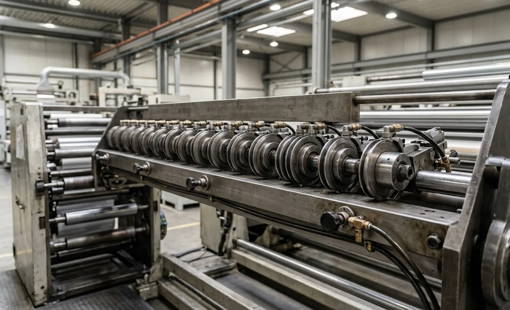
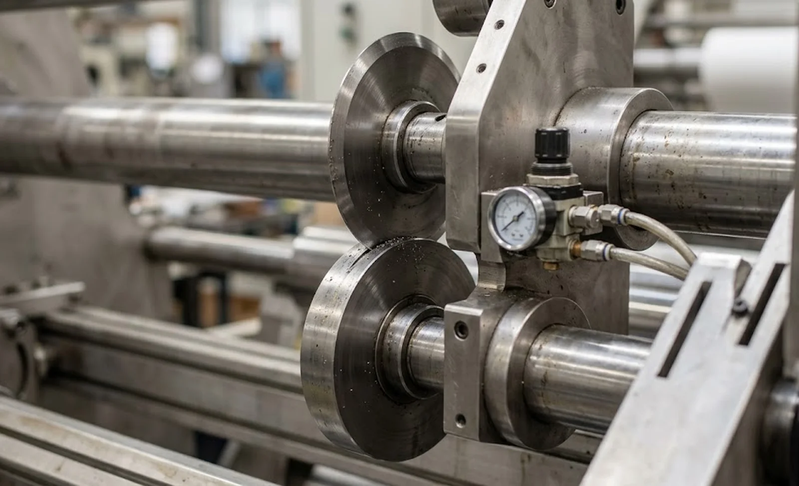

Published October 11, 2026 | By HDPTH Technical Editorial Team

Shear slitting quality is a force problem before it is a geometry problem. The knife clearance and overlap values in our knife clearance guide only produce clean edges when the top blade is pressed against the bottom knife with the right and repeatable side force. On a narrow machine with two or three lanes that is easy. On a three-metre hygiene line with thirty loaded stations, the force actually delivered at each blade is quietly different from the next one — and the difference is invisible on a pressure gauge that sits at the front of the machine. This guide explains where non-uniformity comes from, what it costs, and what a buyer must see demonstrated before signing.
Where pressure non-uniformity comes from
The usual architecture is one pneumatic regulator feeding a manifold, then a long supply line running the width of the machine with branches to every holder. Each element in that chain adds variation. Fittings and quick-connects restrict flow, so holders at the far end see less pressure than holders near the manifold. Inside each holder, cylinder seals, O-rings and springs age at different rates. Spring-loaded holders drift as springs relax, and the relaxation is never synchronised. Finally, the mounting beam itself deflects under the combined load of the holders and the cutting reaction forces, changing the seating angle of the holder arms along the width. None of these mechanisms appears in a quotation; all of them appear in your edge quality.
What uneven pressure costs a converter
The symptoms are recognisable. Lanes near the air supply cut cleanly while distant lanes fuzz, leave a burr on film or demand a fresh blade long before the others. Operators respond rationally: they raise the global pressure until the worst lane cuts. That rescue move overloads every healthy lane — blades heat, dust increases and the consumable spread between lanes widens, feeding the knife life economics in our knife life cost guide. Quality inspectors see it as lane-dependent edge classes on the same roll; the audit findings in our edge quality guide often trace back to this single root cause. The production cost is hidden: slower speeds, more blade changes and sorting rework that never reaches the machine’s OEE report.

What to specify: pressure generation and regulation
Start with how blade force is generated. Pneumatic holders with a regulator per holder — or per zone with no more than a handful of stations per regulator — keep the delivered force stable as blades wear, unlike fixed springs that decay silently between rebuilds. Require a pressure gauge or digital readout at every holder, and connect the readings to the recipes in our recipe management guide so the correct pressure recalls automatically. Ask the supplier to state the maximum pressure deviation between the first and the last holder on the widest machine they build, measured at the blade, not at the regulator. A serious manufacturer knows the number; a catalogue assembler will have to measure it for the first time at your cost.
What to specify: beam rigidity and holder seating
Regulation cannot compensate for a flexible foundation. The knife beam must be specified with a deflection limit across the working width at full load, and the holder arm interface must be a hardened, repeatable seat — the mounting variants and their wear modes are compared in our knife holder mounting guide. Repeatability matters as much as stiffness: after a changeover that re-positions thirty holders, each must return to its original force without re-tuning, or changeover time absorbs the uniformity you paid for. This is where automatic positioning earns its keep, as covered in our automatic knife positioning guide — a positioned holder that re-seats identically keeps its calibrated force.
Verifying uniformity at FAT and in production
Write the verification into the contract. During the factory acceptance test, the supplier should measure blade force at every lane — with a calibrated force washer, load pin or equivalent instrument — on the machine width you are buying, and record the spread. Then cut your web and evaluate edges lane by lane, because pressure uniform in air may still cut non-uniformly in material; the lay-on conditions from our nip pressure guide interact with holder force and must be checked together. In production, keep uniformity alive with the rebuild intervals in our blade lubrication guide. Uniformity is not a purchase, it is a maintained condition — and the machines that hold it are the ones designed to be measured.
Specifying a wide slitting machine?
Send HDPTH your web width, lane count and material. We will state the blade-force uniformity across the full width in writing, show the per-holder regulation and gauges that hold it, and demonstrate lane-by-lane edge quality on your material at FAT.
Submit Your Project InquiryFrequently asked questions
What does knife holder pressure uniformity mean on a slitter rewinder?
It is the consistency of the side force each shear knife holder applies to its top blade against the bottom knife, measured across all lanes on the machine. On a wide web with dozens of holders, the same regulator should deliver the same pressure at every station; uniformity is the spread between the highest and lowest actual blade force. A spread of more than a few percent produces lanes that cut, lanes that fuzz and lanes where blades wear out early.
Why does blade pressure vary from lane to lane on wide machines?
Pressure loss and friction in long, shared pneumatic supply lines, restriction in quick-connect fittings, cylinders and seals that are worn to different degrees, springs that have relaxed unevenly, holder arms that seat at slightly different heights after repeated re-positioning, and deflection of the mounting beam under load all make the effective force at each blade different even when one regulator feeds every holder identically.
What defects indicate uneven knife pressure?
Lanes at the supply end of the machine cut cleanly while distant lanes fuzz or leave burrs, or the reverse. Blade life scatters widely between lanes on the same job, some holders need re-sharpening twice as often, and operators compensate by raising the global pressure until the worst lane cuts — which then loads the best lanes excessively, heats blades, polishes the bottom knives and accelerates wear everywhere.
How should buyers specify knife holder pressure control?
Ask for individual pressure regulation or zoned regulation with a pressure gauge at every holder, holders whose force is generated pneumatically rather than by fatigued springs, a mounting beam with documented low deflection across the working width, supply lines sized so pressure drop between stations is negligible, and a factory acceptance test that measures actual blade force per lane on your web instead of one regulator reading.
Can uneven pressure be fixed on an existing machine?
Often, partially. Replace worn seals and springs, fit gauges and individual regulators per station, re-seat and align the mounting beam, and re-verify each holder against a force reference. But if the beam deflection or the pneumatic architecture is the root cause, corrections will drift again; at that point a retrofit or replacement of the knife holder system is usually more economical than repeated re-tuning.